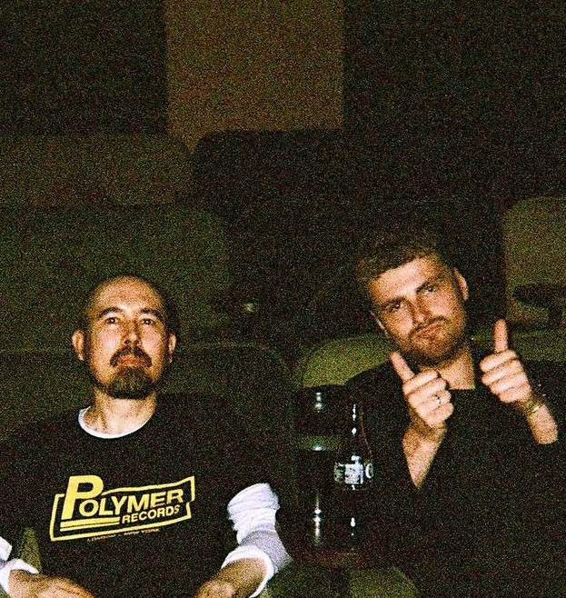
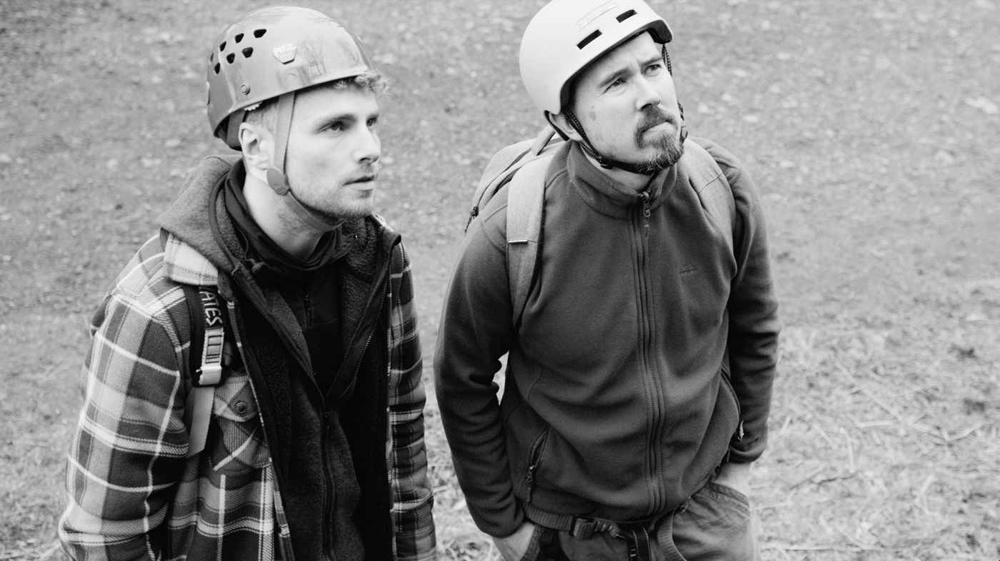
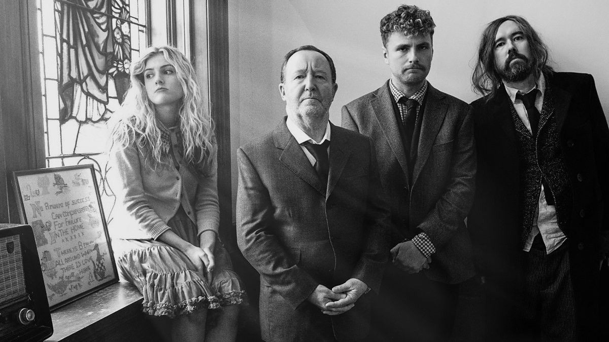

Comedy films by Jacob Topen & Ibrahim Clayton. Widely unknown.
Selected work 2019 - 2024
Book of Jam: selected work
About
Came here looking for a book about jam? We kindly refer you to our chief competitor… The National Trust's Book of Jam.
Now we've got the big things out of the way…
Greetings! We're the other Book of Jam.
We're comedy directors and writers, but above all, humans. We've made lots of comedy over the years, and some under them.
We've worked with big-time-tv-folk like the BBC and even won awards for our work along the way.
Do have a look around, watch our work or get in touch with us to chat about your project! You're welcome to visit back whenever you like.
With love,Jacob & Ibrahim



Press
- TelevisualITV leads New Voice Awards 2024: A Better Place shortlisted for Debut DirectorMar 2024 ↗
- The ListBBC Comedy Short Films reviewJun 2023 ↗
- DeadlineRicky Gervais Sets First BBC Project In A Decade As Comedy Shorts UnveiledMay 2023 ↗
- TelevisualNew comedy shorts for BBCMay 2023 ↗
- ChortleBBC unveils 11 new comedy shortsMay 2023 ↗
- British Comedy GuideBBC announces raft of comedy shortsMay 2023 ↗
- British Comedy GuideBook of JamProfile ↗
Contact